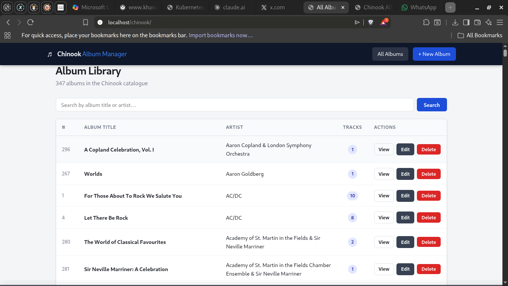
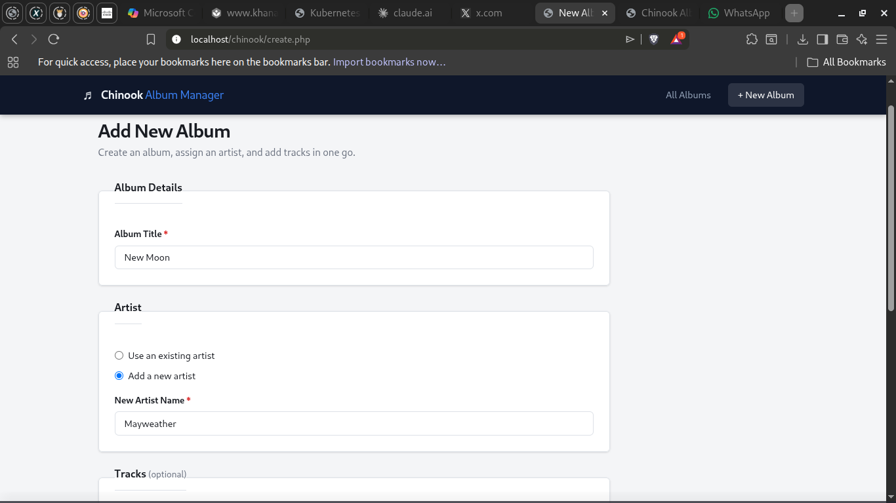
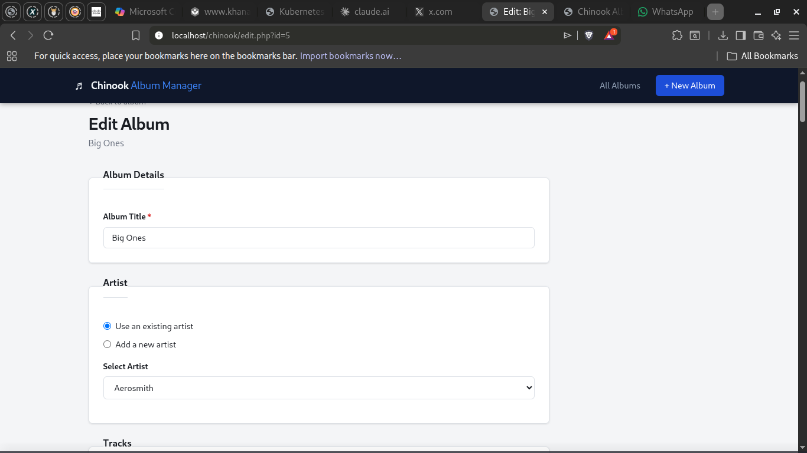
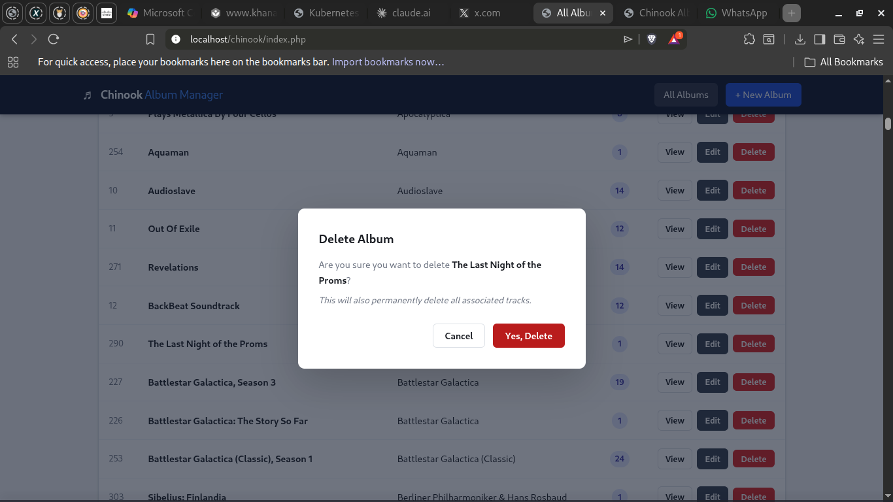

User Documentation — Internal Employee Guide
The Chinook Album Manager is an internal web-based application designed for Chinook Music employees. It provides a simple, browser-based interface for managing the company's music catalogue — allowing staff to view, add, edit, and delete album records along with their associated artists and tracks.
All data is stored securely in the company's MySQL database. No specialist software or installation is required on your computer — you only need a web browser.
To centralise and simplify catalogue management, reducing reliance on manual spreadsheets and ensuring all employees are working from a single, up-to-date source of truth.
This documentation is written for Chinook employees who need to maintain the music catalogue. No technical knowledge is required to use the application.
| Term | Definition |
|---|---|
| Album | A collection of music tracks released together, attributed to an artist. |
| Artist | The performer or group associated with one or more albums. |
| Track | An individual song or piece of music that belongs to an album. |
| CRUD | Create, Read, Update, Delete — the four core data management operations supported by this application. |
| Flash message | A temporary notification shown at the top of the page after an action (e.g. "Album saved successfully"). |
| Component | Requirement |
|---|---|
| Web browser | Any modern browser: Chrome, Firefox, Edge, Safari (latest two versions) |
| JavaScript | Must be enabled (used for delete confirmation and dynamic track rows) |
| Network | Access to the Chinook internal server or localhost (for development) |
| Screen size | Works on desktop and tablet; mobile supported with reduced layout |
If your system administrator has already set up the application on your company server, you only need to open your browser and go to the URL provided.
Launch Chrome, Firefox, Edge, or Safari on your computer.
Type the URL into the address bar, e.g. http://yourserver/chinook/ (your administrator will provide the exact address).
The Album Library page loads automatically — no login is required for internal use.
Follow these steps to run the application on a local development machine:
Install XAMPP (Windows/Mac/Linux) or WAMP (Windows). These bundle Apache, PHP 8+, and MySQL together.
Place the chinook/ folder inside your server's web root directory. For XAMPP, this is C:\xampp\htdocs\.
Open phpMyAdmin (http://localhost/phpmyadmin), create a database named chinook, then import chinook_setup.sql from the application folder. Alternatively, import the full official Chinook dataset.
Open includes/db.php in a text editor and update DB_USER and DB_PASS to match your MySQL login.
In your browser, go to http://localhost/chinook/. The Album Library page should appear.
db.php publicly accessible.
This application is intended for use within a trusted internal network.
The application has a persistent header bar at the top of every page with two links:
The current page is highlighted in the navigation bar so you always know where you are.
The Chinook Album Manager provides four core operations, plus a search feature:
Browse the full album catalogue with artist names and track counts. Click View for full track details.
Create a new album, assign an existing or brand-new artist, and add tracks — all in one form.
Update album title, reassign the artist, edit track details, add new tracks, or mark tracks for deletion.
Permanently remove an album and all its associated tracks after confirming a safety prompt.
Filter the album list by album title or artist name in real time.
Colour-coded flash messages confirm success or report errors after every action.
This is the home page of the application. It displays a table of all albums, showing the album ID, title, artist name, and the number of tracks. From here you can:
Displays all metadata for a single album alongside a full track listing including track name, composer, duration, file size, and price. An Edit Album button is provided at the top.
A structured form split into three sections: Album Details, Artist, and Tracks. You can choose to assign an existing artist from a dropdown or add a completely new artist. Tracks can be added dynamically using the + Add Another Track button — as many as needed.
Identical layout to the create form but pre-populated with the current data. Existing tracks are shown with a Mark for deletion checkbox. Ticking it dims the row and signals to the application to remove it when you save. New tracks can also be added at the bottom.
Clicking Delete on the album list does not immediately delete anything. A modal dialog appears showing the album name and a warning that all tracks will also be permanently removed. You must click Yes, Delete to confirm, or Cancel to return safely.

Screenshot: Album Library table (index.php)Navigate to the application URL. The Album Library page loads automatically showing all albums.
Scroll through the list. Each row shows the Album ID, Title, Artist, and number of tracks.
Type a keyword into the search box and click Search. The table updates to show matching albums. Click Clear to reset.
Click the View button on any row to open the album's detail page, including its full track listing.

Screenshot: New Album form (create.php)Click + New Album in the top navigation bar.
Type the album title into the Album Title field. This field is required.
Select Use an existing artist and pick from the dropdown, or select Add a new artist and type the new artist's name.
Fill in the pre-existing track row, or click + Add Another Track to add more rows. Each track requires a name; all other fields are optional.
Click Create Album. If any required fields are missing, error messages will appear — correct them and try again. On success, you are taken to the new album's detail page.

Screenshot: Edit Album form (edit.php)On the Album Library page, locate the album you want to change. Use the search bar if needed.
Click the Edit button on that album's row, or click Edit Album from the album's detail page.
Update the album title, reassign the artist, edit any track fields, mark tracks for deletion by ticking their checkbox, or add new tracks at the bottom.
Click Save Changes. Validation errors will be displayed inline if something is missing. On success you are redirected to the album's detail page.

Screenshot: Delete confirmation modalFind the album on the Album Library page.
Click the red Delete button on that album's row. A confirmation dialog appears.
The dialog shows the album name and warns you that all its tracks will also be deleted.
Click Yes, Delete to proceed permanently. Click Cancel (or press Escape) to go back without making any changes.
| Problem | Likely Cause | Solution |
|---|---|---|
| Blank page or "Database connection failed" | Incorrect database credentials or MySQL server not running | Check includes/db.php credentials; ensure MySQL is running in XAMPP/WAMP |
| Form says "Album title is required" even though I filled it in | Leading/trailing spaces only, or browser auto-fill issue | Re-type the title manually |
| "+ Add Another Track" button does nothing | JavaScript is disabled in the browser | Enable JavaScript in browser settings and reload |
| Page not found (404) | Application files not in the correct folder | Ensure the chinook/ folder is inside the web root (htdocs/) |
References
Mozilla Developer Network (MDN). (n.d.). Web Storage API – Using Local Storage and Session Storage. Retrieved from: https://developer.mozilla.org/en-US/docs/Web/API/Web_Storage_API
W3Schools. (2025). HTML, CSS, and JavaScript Tutorials. Retrieved from: https://www.w3schools.com
FreeCodeCamp. (2024, September 12). Building a CRUD App with JavaScript and Local Storage. Retrieved from: https://www.freecodecamp.org/news/learn-javascript-for-beginners/
CSS-Tricks. (2024, May 3). A Complete Guide to Flexbox and Grid Layouts for Responsive Design. Retrieved from: https://css-tricks.com/snippets/css/a-guide-to-flexbox/
Stack Overflow Developer Community. (2025). Handling Client-Side Storage in Modern Web Applications. Retrieved from: https://stackoverflow.com/questions/tagged/local-storage
DigitalOcean. (2024, October 10). Understanding JavaScript Functions and the Document Object Model (DOM). Retrieved from: https://www.digitalocean.com/community/tutorials/
Smashing Magazine. (2025, January 4). Creating User-Friendly Web Interfaces with Accessibility in Mind. Retrieved from: https://www.smashingmagazine.com/